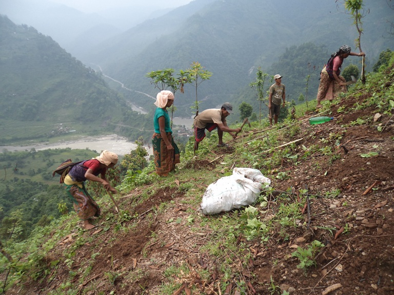

This mini-lecture provides an overview of how nature-based solutions can be used for erosion and landslides control. Case studies are presented to show some of these solutions in practice.
Climate change is anticipated to make extreme events more common. Intense precipitation events can lead to soil erosion and landslides that can have dramatic consequences on the livelihoods of affected people. Between 2004 and 2016, almost 56,000 people were killed by landslides globally (Kapos et al. 2019), with most frequent occurrences in India, China, the Philippines and Nepal where high precipitation events and frequent earthquakes coincide (Stokes et al. 2014; European Environment Agency 2015). Soil erosion similarly has huge consequences, particularly on the agricultural sector where economic losses from erosion of arable lands have been estimated at USD400 billion globally per year (Kapos et al. 2019). Shallow landslides and upstream soil loss can also generate high sediment yields that are transported downstream, causing reservoir sedimentation and pollution; riverbanks and dikes are particularly sensitive to damage from such scouring forces from increased sediment in the river (Stokes et al. 2014).
The global increase in landslides is caused by more extreme rainfall events, combined with overexploitation of natural resources, deforestation, uncontrolled land use, grazing and/or construction (European Environment Agency 2015; Stokes et al. 2014). The destruction of forest cover for clear-cut areas and logging roads have been identified as particularly important driving factors (European Environment Agency 2015).
In this mini-lecture, we will look at how nature-based solutions can be used to address the challenges of soil erosion and landslides. First, we will assess nature-based solutions for erosion control with an example in Bangladesh, and then for landslide management with a case study in Nepal.
Climate-related erosion occurs predominantly near waterbodies, as the force of water or waves exert pressures on unstable soils. A clear pattern emerges in the literature on nature-based solutions for erosion control, which is that planting vegetation along coastlines and riverbanks can play an important role in soil stabilisation. This is exemplified in Table 16.3.1 below, which provides a portfolio of different nature-based solutions for erosion in both riverine and coastal environments.
Table 16.3.1: Nature-based solutions for riverine and coastal erosion (Kapos et al. 2019)
| Erosion type | Hard Engineering options | Nature-based solutions | Co-benefits |
|---|---|---|---|
| Riverine |
|
|
|
| Coastal / Tidal |
|
|
|
As evident from the table, vegetating river catchments, particularly along the riverbanks, can stabilise the soil and reduce the risk to erosion. This vegetation also acts as cover for soil, reducing its exposure to surface soil erosion. In coastal areas, measures are centred around reducing the wave energy reaching the coastline. Mangroves are the most well-known nature-based solution for coastal protection from erosion; however, in areas where mangroves are not native, such as the UK for instance, sea grass has played a key role in regulating water currents and stabilising sediments, reducing the rates of erosion observed. We will now show how nature-based solutions have been used in addressing the erosion challenges faced in Bangladesh.
Bangladesh is a nation of rivers. It is home to the Ganges-Brahmaputra-Meghna (GBM) delta, with over 700 tributaries and distributaries. Mini-lecture 16.2 illustrated how the Sundarban mangrove forest can protect Bangladesh from storm-surge flooding in the coastal zone; here, we use Bangladesh as an example of nature-based solutions for riverine erosion.
Riverine erosion is one of the main drivers of pushing new households into poverty in Bangladesh. Approximately 15-20 million people are at risk from the impacts of erosion across the country (Rahman, Islam, and Rahman 2015). Along the Brahmaputra alone, 870km2 of land has been lost since 1973. After decades of hard-engineering management measures, it has become evident that engineering structures are not able to control the dynamic nature of these vast river systems. Instead, a mosaic of nature-based solutions in different local areas along riverbanks and coastal regions have shown to be effective with erosion management:
Planting vetiver grass (Chrysopogon zizanoides) to protect the surface of existing earthen embankments from erosion (Zaman et al. 2016)
Encouraging farmers to leave a few centimetres of stem from their crops during harvest in order to trap suspended sediments and prevent soil erosion (Khalequzzaman 1994)
Breaching of existing embankments (locally termed Tidal River Management) in order to re-establish the natural sedimentation patterns between river and floodplain and reduce the scouring on existing erosion and flood infrastructure.
In this complex and dynamic environment, one solution will not solve the issue of erosion, but rather a combination of localised mitigation measures, and strong collaboration between decision-makers, researchers, engineers, local authorities and local communities.
Similar to nature-based solutions for erosion, vegetation can be used to stabilise slopes that are prone to landslides. Thick roots act like nails in the soil on slopes, reinforcing the soil (Stokes et al. 2014; European Environment Agency 2015). To effectively stabilise a slope against shallow landslides, plant roots must cross the sheer surface, which may be up to 2m deep (Stokes et al. 2014; ADPC 2020). Thinner and finer roots can hold the topsoil together and can reinforce soil by adding cohesion (Stokes et al. 2014). The effectiveness of vegetation in protecting slopes depends on the architecture and extent of the root system; root depth and distribution have been identified as the most important properties for slope stabilisation (ADPC 2020). Vegetation can therefore stabilise soil through its roots, but also protect the soil surface from surface erosion as well as from gully formation (ADPC 2020).
Vegetating slopes for stabilisation is predominantly done by planting live cuttings and rooted plants into the ground in various arrangements and geometric arrays, in a way that will reinforce soil and create barriers to earth movement (ADPC 2020). This will help drain excess water from the slope, enhancing drainage and avoiding soil saturation and slumping of earth materials (ADPC 2020).
We will now show the use of nature-based solutions for landslide mitigation in Nepal.
Nepal is located in a region of heavy precipitation (monsoon seasonality) and frequent earthquakes. This makes the country one of the most vulnerable countries in the world to landslides. Nepal has been hit with more than 4,000 landslides since the devastating earthquake in April 2015 (IUCN 2021). Shallow landslides, involving the top 2m of soil, are very frequent in the hillslopes (IUCN 2014). Much of the country’s terrain is under stress with the numbers of poorly secured roads increasing, making slopes even more vulnerable to failure.
Nature-based solutions, in the form of vegetating slopes for stabilisation, are a cost-effective and locally adapted method along roadside slopes, riverbanks or cultivated terraces. Examples of approaches include planting grass lines along contours, turfing, jute netting together with seedlings, bamboo fencing and vegetated stone pitching (IUCN 2014). Typically, a drainage canal, similar to bioswales, is also built alongside roads to capture some of the excess runoff during heavy rainfall events and direct it to agricultural fields (IUCN 2021). In particular, an indigenous plant called Amriso (also known as broom grass) has been widely used to stabilise slopes in rural Nepal (Figure 16.3.1). This is a tall and fast-growing plant that has a weblike network of roots, capturing the soil and holding it together (IUCN 2021). Moreover, the plant also provides leaves for good fodder and stems for fuel and is used to make sweeping brooms (WWF 2013). The implementation of Amriso has caused a noticeable reduction in mud- and landslides across rural Nepal (IUCN 2021).
The successes of slope stabilisation in Nepal are also linked with strong involvement of communities in establishing and maintaining these natural measures of soil stabilisation (IUCN 2021).

Figure 16.3.1: Local communities planting Amriso along unstable steep slopes (WWF 2013)
This mini-lecture provided an overview of the challenges faced with erosion and landslides and how nature-based solutions can provide alternative options to traditional hard-engineering measures. Two case studies were presented: natural riverine erosion management in Bangladesh and natural landslide management in Nepal.